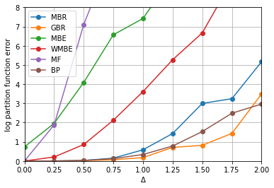
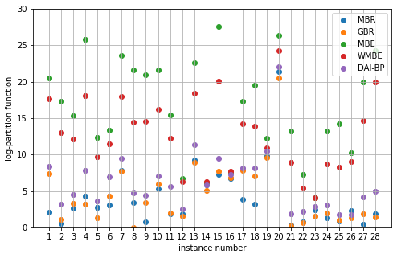

Bucket renormalization¶
This notebook reproduces some results from this paper on bucket renormalization. See paper for details
Also it demonstrates how to use InferLO helpers for loading UAI datasets and for caching experiment results.
[1]:
import numpy as np
from matplotlib import pyplot as plt
from time import time
from networkx import grid_graph
import inferlo
from inferlo import testing
from inferlo.datasets import DatasetLoader
from inferlo.interop import LibDaiInterop
import inferlo.generic.inference as inf
loader = DatasetLoader()
libdai = LibDaiInterop()
assert libdai.is_libdai_ready()
exp_runner = inferlo.testing.ExperimentRunner()
1. Ising model on grid¶
Built random Ising model on 15x15 grid, with varying interaction strength. Observed how accuracy of log partition function depends on interaction strength.
Ran for Mini-Bucket elimination, Global-Buclet elimination. Compared with Belief Propagation, Mean Field, Mini-Bucket Elimination, Weighted Mini-Bucket Elimination. Used Bucket Elimination for getting exact answer.
Corresponds to Fig. 3(b) in the paper.
[2]:
def ising_grid_delta_v2(grid_size=5, delta=1.0, seed=0, ibound=10):
graph = grid_graph(dim=(grid_size, grid_size))
model = testing.ising_model_on_graph(graph, field_range=0.1, interaction_range=delta, seed=seed)
true_log_pf = inf.bucket_elimination(model, elimination_order_method="not_random")
get_error = lambda x: np.abs(x - true_log_pf) * np.log(10)
return {
"MBR" : get_error(inf.bucket_renormalization(model, max_iter=0)),
"GBR" : get_error(inf.bucket_renormalization(model, max_iter=1)),
"MBE" : get_error(inf.mini_bucket_elimination(model, ibound=ibound)),
"WMBE" : get_error(inf.weighted_mini_bucket_elimination(model, ibound=ibound)),
"MF" : get_error(inf.mean_field(model)),
"BP" : get_error(libdai.infer(model, 'BP').log_pf),
}
delta_range = np.linspace(0, 2, 9)
repeats = 3
for delta in delta_range:
for seed in range(repeats):
exp_runner.run_experiment(ising_grid_delta_v2, {'grid_size': 15, 'delta':delta, 'seed':seed})
results = exp_runner.get_results('ising_grid_delta_v2', filter_params={'grid_size': 15})
algos = ["MBR", "GBR", "MBE", "WMBE", "MF", "BP"]
for algo in algos:
avg_errors = []
for delta in delta_range:
errors = [r['result'][algo] for r in results if r['params']['delta'] == delta]
avg_error = np.mean(errors) / (np.log(10)**2)
avg_errors.append(avg_error)
plt.plot(delta_range, avg_errors, label=algo, marker='o')
plt.xlabel('Δ')
plt.ylabel('log partition function error')
plt.grid()
plt.legend()
plt.xlim([0, 2])
plt.ylim([0, 8])
plt.show()

2. Promedus dataset¶
Corresponds to Fig. 3(f) in the paper.
[3]:
def infer_uai_dataset(dataset_name='', algo=''):
model = loader.load_uai_dataset(dataset_name).model
if algo == 'MBR':
return inf.bucket_renormalization(model, max_iter=0)
elif algo == 'GBR':
return inf.bucket_renormalization(model, max_iter=1)
elif algo == 'MBE':
return inf.mini_bucket_elimination(model, ibound=10)
elif algo == 'WMBE':
return inf.weighted_mini_bucket_elimination(model, ibound=10)
elif algo == 'BP':
return inf.belief_propagation(model).log_pf
elif algo == 'IJGP':
return inf.iterative_join_graph_propagation(model, ibound=10)
elif algo[:4] == 'DAI-':
return libdai.infer(model, algo[4:]).log_pf
else:
raise ValueError(algo)
algos = ['MBR', 'GBR', 'MBE', 'WMBE', 'DAI-BP']
dataset_id_range = np.array(range(11, 39))
fig = plt.figure(figsize=(8, 5))
ax = fig.add_subplot(1, 1, 1)
for algo in algos:
errors = []
for dataset_id in dataset_id_range:
dataset_name = 'Promedus_%d.uai' % dataset_id
true_log_pf = loader.load_uai_dataset(dataset_name).true_log_pf
result = exp_runner.run_experiment(infer_uai_dataset, {'dataset_name': dataset_name, 'algo': algo})
error_log10 = np.abs(result['result'] - true_log_pf) / np.log(10)
errors.append(error_log10)
ax.scatter(dataset_id_range - 10, errors, label=algo)
ax.set_xlabel('instance number')
ax.set_ylabel('log-partition function')
ax.set_xticks(dataset_id_range - 10)
ax.set_ylim([0, 30])
ax.grid()
ax.legend()
plt.show()
